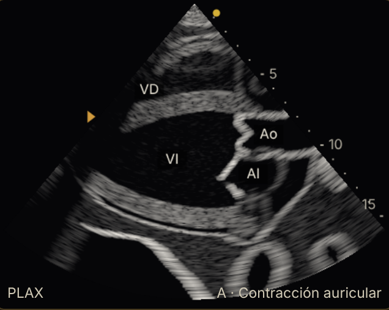

Normal · paraesternal eje largo (escenario normal, g=-)

normal-plax.png

ref-normal-plax.png
mukherjee-2025-corazon-derecho-hp-ase.pdf · PDF p. 6 · página impresa 146 · Mukherjee 2025, Fig. 1 (planos estándar: esquemas)
- fase: A · Contracción auricular
- titulo: PLAX
- grav:
- Último latido: PA 105/67 (PAM 86) · FC 69 · GC 5.0 L/min · PVC 4
- VI: 119 mL · 10 mmHg
- VD: 138 mL · 6 mmHg
- Aorta: 72 mmHg · AP 13
- Aurículas: AI 25 · AD 18 mL
- motor: FC 69 · PAM 86 · PA 105/undefined · GC 5.03 · PVC 4.3
- pantalla: mezcla